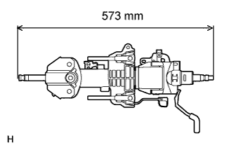

STEERING COLUMN ASSEMBLY (for Manual Tilt and Manual Telescopic Steering Column) > INSPECTION
for Preparation
Click here
1. INSPECT STEERING COLUMN ASSEMBLY

Measure the length of the steering main shaft.
Standard length:
573 mm (1.88 ft.)